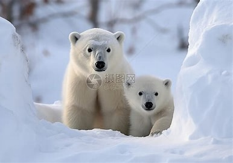
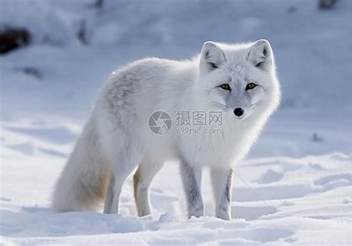
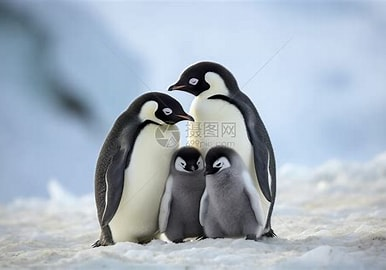
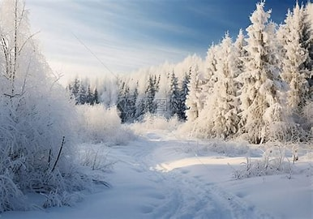
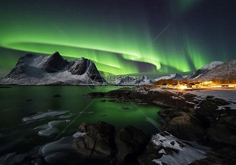
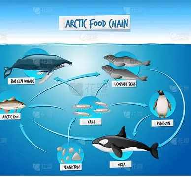

北极熊 —— 冰上霸主
北极熊是北极的顶级捕食者，体重可达800公斤，拥有厚厚的脂肪层和雪白毛发，能在冰雪环境中完美伪装。它们是优秀的游泳健将，可在冰冷的海水中游行数公里捕猎海豹，是北极食物链的最顶端。
极地（北极和南极地区）是地球上最寒冷的陆地环境，常年冰雪覆盖，气温极低，食物资源季节性变化巨大。在这样的极端条件下，极地动物进化出了厚厚的脂肪层、白色伪装毛发和高效保温机制，成为自然界适应力最强的生命形式。

北极熊是北极的顶级捕食者，体重可达800公斤，拥有厚厚的脂肪层和雪白毛发，能在冰雪环境中完美伪装。它们是优秀的游泳健将，可在冰冷的海水中游行数公里捕猎海豹，是北极食物链的最顶端。

北极狐毛色随季节变化（夏季棕灰、冬季雪白），能在-50℃的极端低温下生存。它们 omnivorous，食物来源广泛，是北极食物链的重要环节。

企鹅是南极的标志性动物，善于游泳和在冰上行走。它们群居生活，形成了独特的极地生态群落。

极地大部分时间被冰雪覆盖，动物进化出白色伪装和厚重脂肪层来保温和隐藏。

夏季极昼、冬季极夜，动物形成了独特的昼夜节律和迁徙习性。

夏季食物丰富，冬季匮乏，动物通过脂肪储备和降低代谢来度过漫长寒冬。
极地是全球气候调节器，冰川融化会引发海平面上升、极端天气增加等连锁反应。保护极地动物，就是保护地球气候系统和人类共同的未来。全球变暖是当前最大的威胁，我们需要共同行动减少碳排放，守护这片纯净的冰雪世界。